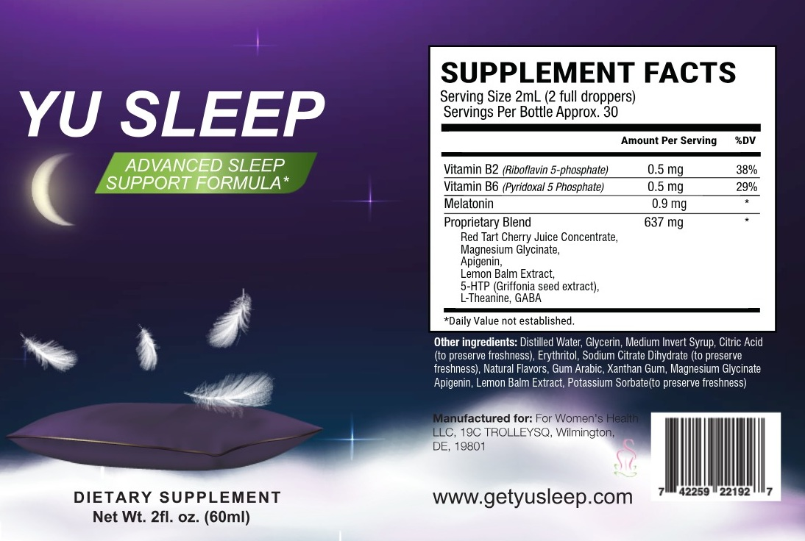

Why Yu Sleep Stands Out
The "Tired but Wired" Problem
If you're reading this, you probably know the feeling: your body is exhausted, but the moment your head hits the pillow, your brain turns on. You fall asleep, but like clockwork, you snap awake at 3:00 AM.
Most people turn to standard sleep aids or high-dose melatonin. But as many Reddit users point out, this often leads to grogginess, tolerance, and weird dreams—without actually fixing the root cause.
What is Yu Sleep and How Does It Work?
Yu Sleep takes a different approach. Instead of just knocking you out with synthetic chemicals, it uses a nano-enhanced, plant-based formula designed to work with your body's natural rhythm.
What's Inside the Bottle? It uses a low dose of Melatonin (0.9 mg), Red Tart Cherry Juice Concentrate (The "Cherry Trick"), Magnesium Glycinate, L-Theanine, and GABA to stop the racing mind.

Official label: 100% transparent ingredients.
Pros and Cons
What We Liked
- ✓ Low-dose melatonin (no next-day hangover).
- ✓ Tart Cherry & Magnesium backed by research.
- ✓ Liquid formula absorbs faster.
What to Consider
- ✕ Only available on the official website.
- ✕ Has a natural tart cherry taste.
- ✕ It's a support formula, not a magic pill.
Affiliate link — you pay the same price, we may earn a commission.